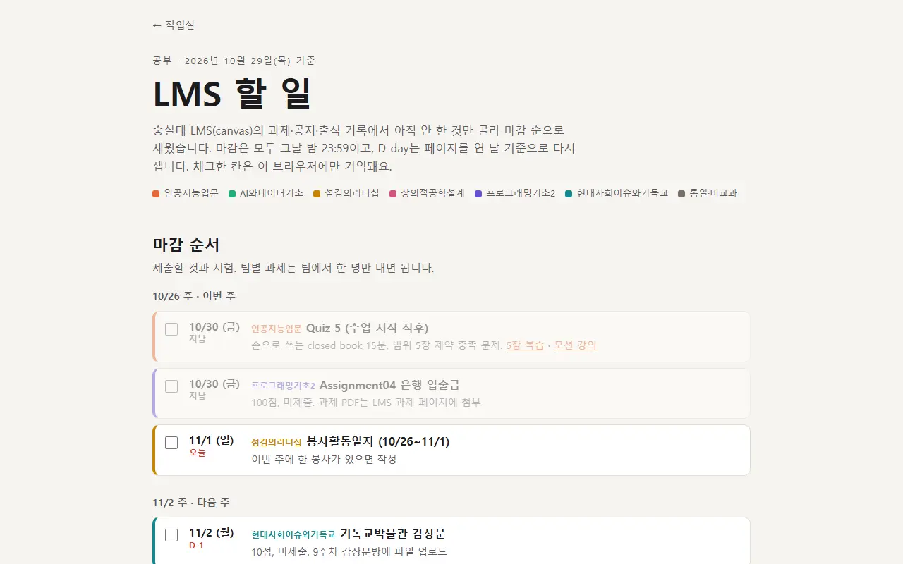

만들면서 배우는
1학년의 작업실
숭실대 AI소프트웨어학부 1학년이 노트북 한 대로 만든 게임 도록, 복습 도구, 생활 자동화를 한곳에 모았습니다.
오늘 AI 공부 열기 →
아침 8시마다 한 주제씩 카톡으로 와요.
게임
혼자 기획하고 있는 두 편. 그림과 규칙, 한 판의 흐름까지 도록으로 묶었습니다.
넋굿
부서진 저승길 위에서 구미호 아이가 오행 술법으로 원귀를 풀어 주는 쿼터뷰 액션 로그라이트. Unity 6으로 만들 계획이고, 이야기·전투·원귀·술법·신당까지 열두 거리로 정리했습니다.
넋굿 도록 보기 →브라운 로그
한·중·일 영웅 열다섯 중 다섯을 골라 3×4 진형에 세우는 동양풍 배치 턴제 RPG. pygame-ce로 만들었고, 영웅·전투·보스 열 장·원정 모드까지 열한 절로 정리했습니다.
브라운 로그 도록 보기 →공부
1학년 2학기 수업을 복습하려고 만든 도구들. 강의 정리, 퀴즈, 오답노트, 움직이는 강의까지.

인공지능 입문 복습 노트
1~5장. AI의 역사, 지능형 에이전트, 탐색, 복잡한 환경의 탐색, 제약 충족 문제. 원본 강의안과 수업 녹음 정리, 중간고사 정리까지.



LMS 할 일
LMS 과제·공지·출석 기록에서 아직 안 한 것만 마감 순으로. 체크하면서 지우는 목록이고, 모집 중인 비교과 프로그램도 신청 마감순으로 모았어요.

인간과 성서 서술형 답안
그리스와 기독교의 인간관, 구한말 기독교와 근대화, 혐오와 그 해결. 교재 쪽수를 근거로 쓴 글을 내 말투, 교재 정리본, 외우기용으로 나눠 봅니다.
프로젝트
수업 팀 과제와, 생활에서 불편했던 걸 직접 고친 것들.
기타
진로 고민, 학교 제도 조사, 노트북 관리처럼 그때그때 정리한 것들.